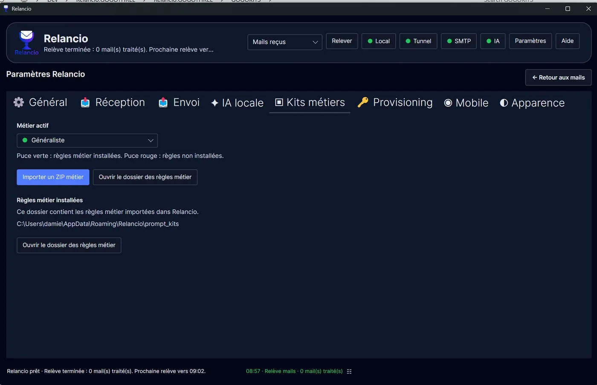

Import a business ZIP
Use Import a business ZIP to add or update rules. The rules are stored locally in the Relancio configuration folder.
Relancio
Adapt replies with local business rules and prompts.
A business kit contains rules and prompts that guide the style and content of generated replies. The active business context therefore directly influences the proposal produced by the local AI.
In the business list, a green dot indicates that the rules are installed. A red dot indicates that they are not installed yet.

Use Import a business ZIP to add or update rules. The rules are stored locally in the Relancio configuration folder.
The green dot indicates that the rules for the business context are installed. A red dot means that the expected rules are not present yet.